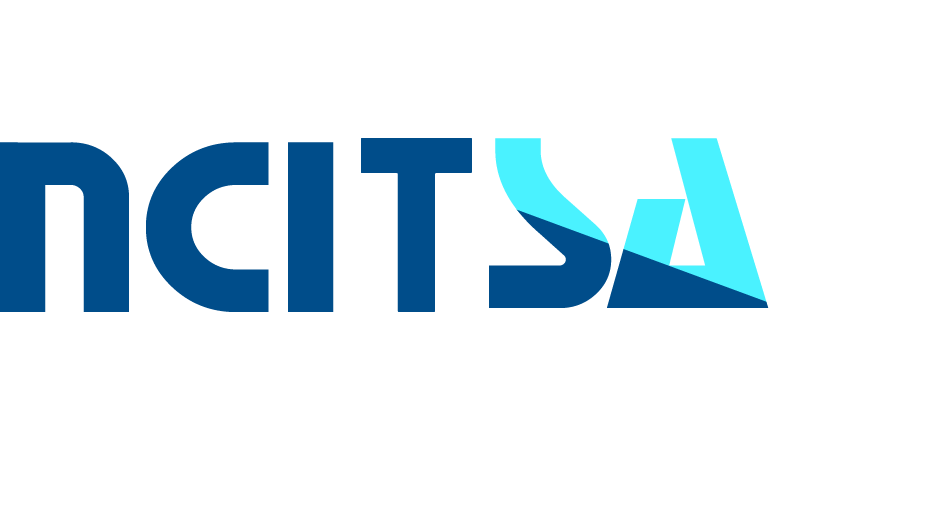
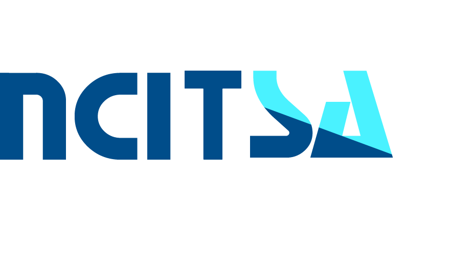
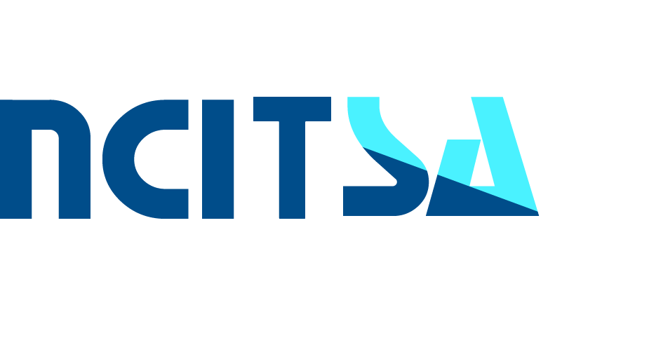

National Conference On Information Technology & Security Applications 2019
JECRC Foundation, Jaipur, Rajasthan
Organised By :
 

Organised By :

The National Conference on Informational Technology and Security Applications (NCITSA-2019) is the premier conference for the presentation of new advances and research results in the fields of Information Technology Engineering Application, to be held in the lovely and highly vibrant city of Jaipur in Rajasthan, India.
NCITSA 2019 aims to provide an opportunistic forum and vibrant platform for researchers and industry practitioners to exchange state-of-the-art knowledge gained from their original research work and practical developments on specific new challenges, applications and experiences, to establish business or research relations, and to find global partners for future collaboration on emerging issues.
Original unpublished manuscripts, and not currently under review in another journal or conference, are solicited in relevant areas. For more details, Please visit Conference webpage www.jecrcconference.in/ncitsa.
Venue: Jaipur Engineering College & Research Centre, Jaipur
Dates of Conference: March 16, 2019
Submission Guidelines:
We are pleased to invite you to submit original contributions to NCITSA 2019 via the official submission system for the conference https://easychair.org/conferences/?conf=ncitsa19. This can include, technical and experimental, theoretical, conceptual, or a survey in the form of Position Paper/ Fast Abstracts/ Poster Papers/Tool Demonstrations/ Industrial Contributions.
Articles submitted to the conference should report original, previously unpublished research results, experimental or theoretical offering novel research contributions in any aspect of Expert Applications & Security and must not be under consideration for publication elsewhere. Submissions will be double blind peer reviewed and evaluated based on originality, technical and/ or research content/depth, correctness, relevance to conference, contributions, and readability. The full paper submissions will be chosen based on technical merit, interest, applicability and how well they fit a coherent and balanced technical program.
Topics of interests should fall under one or more of the conference tracks:
| Track 1: Information Security |
|
|---|---|
| Track 2: Big Data |
|
| Track 3: Soft Computing |
|
| Track 4: Virtual Communities and Social Networking |
|
| Track 5: Artificial Intelligence |
|
| Track 6: Computer Applications |
|
| Track 7: Machine Learning, Modeling & Simulation |
|
Note : For more topics of Conference Tracks consider Tracks tab